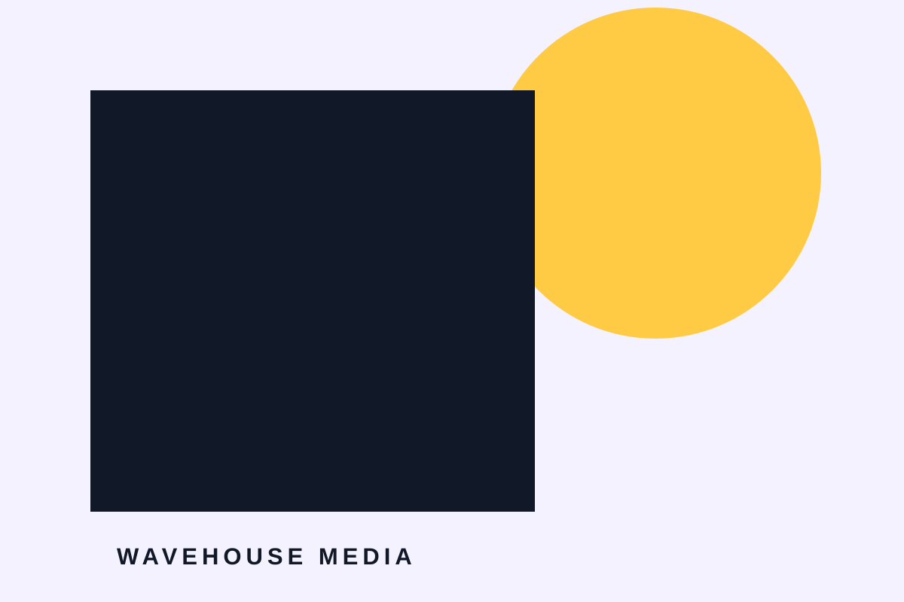

ON AIR · PODCAST PRODUCTION
STORIES WORTH HEARING.
สตูดิโอผลิตพอดแคสต์ที่ช่วยเปลี่ยนไอเดียให้กลายเป็นรายการซึ่งผู้ฟังอยากติดตาม
ดูรายการ →
สตูดิโอผลิตพอดแคสต์ที่ช่วยเปลี่ยนไอเดียให้กลายเป็นรายการซึ่งผู้ฟังอยากติดตาม
ดูรายการ →